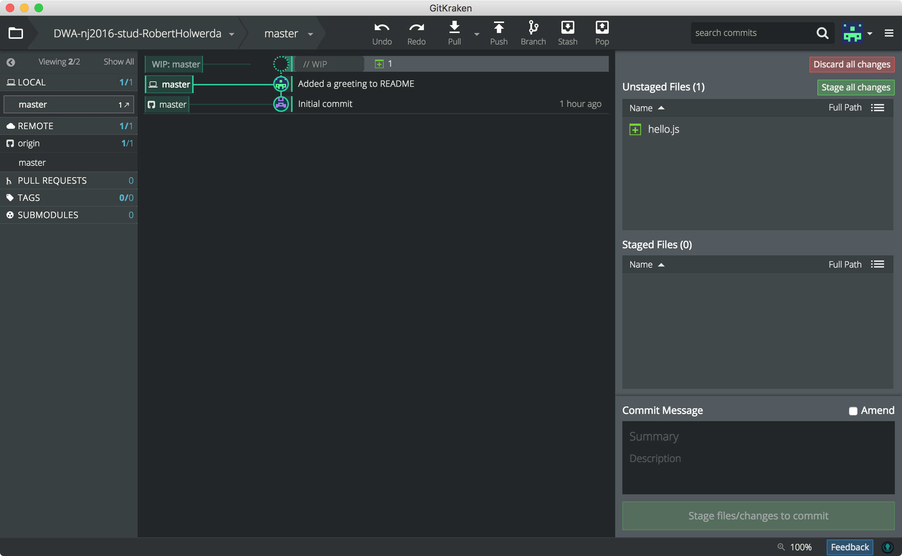

lab 3 Add a New File
Goals
- Learn how to add a new file to your local repo.
01Create a “Hello, World” script
Create a directory called "Git Tutorial" in the main directory of the local repo.
In the directory "Git tutorial", create a new file called "hello.js" using your favorite text editor. Give it the following contents:
File: hello.js
'use strict';
console.log('Hello, World');
Save, and switch to GitKraken. Notice how the new file appears in the list of "Unstaged Files":
02Commit this change
Adding this file to the version-history of your project (i.e. creating a commit), is exactly the same as in the previous step.
Create the commit by:
- staging the new file
- adding text to the commit message
- pressing the commit button